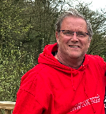

CV of Garry Reynolds

Contact Details
Summary:
A dedicated professional Quality Specialist with a computing background with wide ranging skills
- Computerised Software Validation specialist with experience in qualifying:
- Standalone applications
- COTS and Bespoke Applications
- Client/Server configurations
- Web based systems
- SCADA, DCS, PLC’s (Inc Wonderware based systems)
- LAN/WAN/SAN Infrastructure and System hardware
- Electronic Quality Management Systems (EQMS)
- Requirements Management systems
- ERP systems
- Laboratory systems
Education
Skills & Training
Endorsements
Work Experience